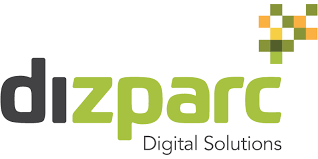
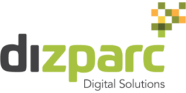
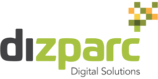

Samarbetspartners:


 

Det Digitala labbet är en del av det UIA-finansierade projektet DIACCESS, som syftar till att ta fram digitala lösningar för den medelstora staden samt att bidra till det allmänna innovations- och digitaliseringsklimatet i Växjö.
I det digitala labbet arbetar 4 traineer med arbetsmarknadsanställningar tillsammans med en medarbetare från det kommunala bolaget Wexnet och ett team från mjukvaruföretaget Dizparc. Arbetet i labbet leds av en projektledare från förvaltningen Arbete och Välfärd.
Arbetsuppgifterna i det digitala labbet varierar beroende på vilka utmaningar vi får från kommunens verksamheter eller vilka innovationer som partners inom näringslivet försöker utveckla. Det kan handla om allt från att analysera och mäta data från sensorer som mäter snödjup till att bygga en chattrobot till kommunens kontaktcenter.
Målet vi har för våra traineer i det Digitala labbet är att kunna etablera dom inom IT-sektorn på den reguljära arbetsmarknaden efter avslutad arbetsmarknadsanställning.
